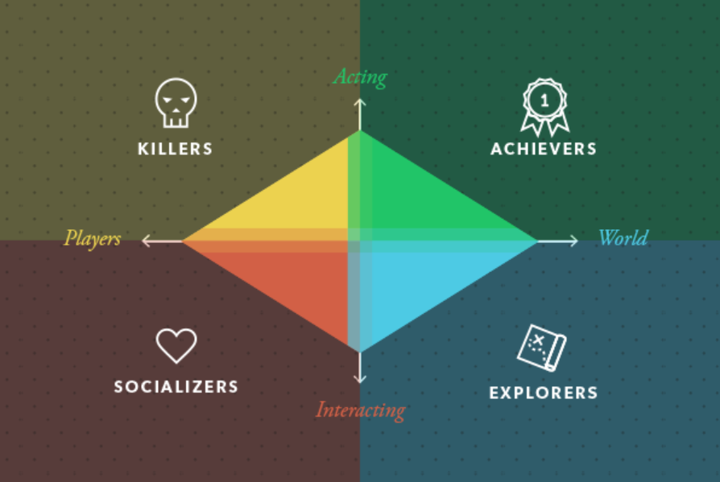
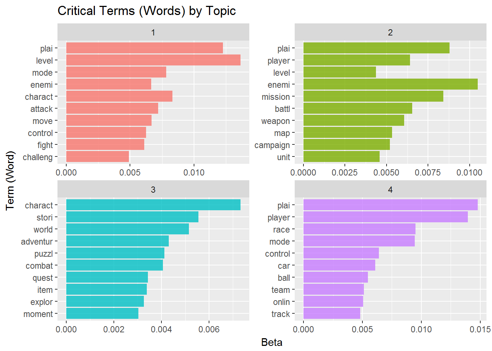
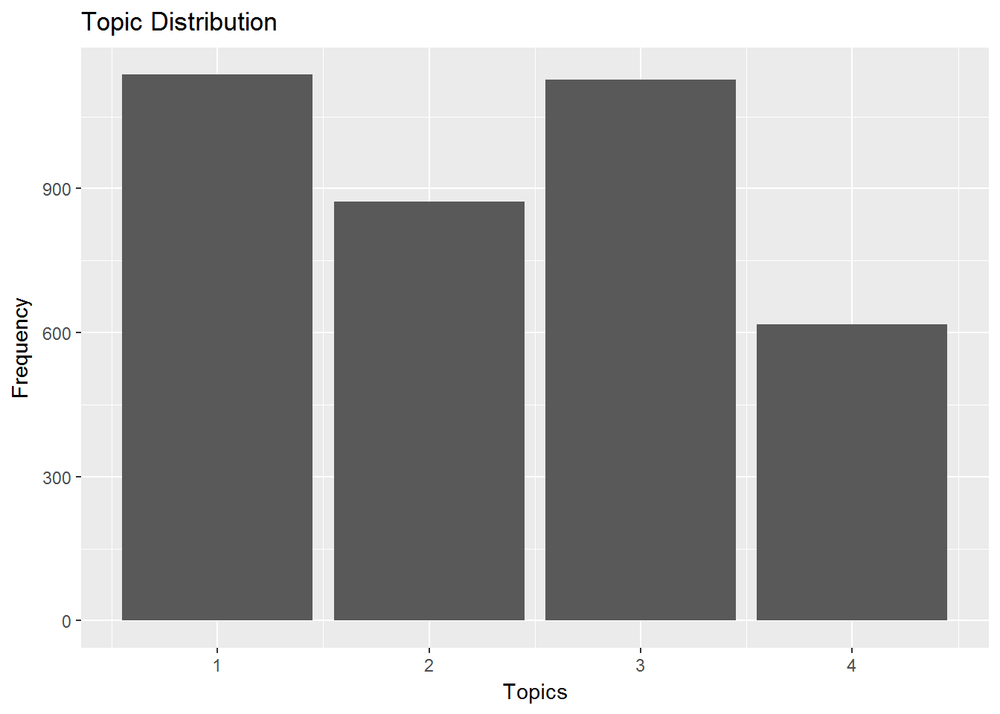

we apply LDA model for game review topic analysis. The ultimate goal for this is to discover experiential categories of games that we applied in further study concerning their moderating effects on the relationship between sentiments and the general game scores. Moreover, trying to match the categories to Bartle’s game experience model, one of the classics, we set the model’s topic number at four.
 The four experience categories thus are defined as follows:
Explorative Type: Focuses on providing exploring new things, new visual experience, or new structures and rules behind phenomena. Value the variety of objects.
Achievemental Type: Focuses on providing the sense of achievement, the feedbacks after challenges and the goal structure of accomplishments.
Sensational Type: Focuses on providing the more primitive enjoyment. It can be provided by the sense of speed and brutal forces, or figuratively, allowing players break the laws in the real world, killing, vandalizing, and so forth.
Social Type: Focuses on providing social values, such as the sense of team work. This type lets players interact with each other or NPC, or serves as a material for real-life social interactions.
The result shown in the following graph is not very satisfying. The boundaries between topics are blur due to many over-arching words applied in multiple wopics. On top of that, they often over reflecting some traditional game categories, such as sport and car games in topic 4, instead of more general experience topics. For these, some further modifications are discussed in the Future Research section in the home page.
Though not really exciting, the result topics still provide a vague flavor in terms of game’s experiential categorization, which I believe could be further improved in further research.
In the result, topic 1 stresses words without a clear pattern for us. Vaguely, they represents some notions about characters and motions. Compared with the real games it represents in our later analysis, we would say that there’s a weak connection between topic 1 and Bartle’s Socializer type of experience, which emphasize the social interaction experience between players.
Topic 2 features words like mission, level, and campaign. It could probably be connected to Bartle’s Achiever type of experience, while it underlies the achievement and progress players can make in games.
Topic 3, on the other hand, stresses words like story, world, adventure, and puzzle. We therefore propose a relatively strong connection between topic 3 and Bartle’s Explorer type of experience, which emphasizes the players’ exploration in game worlds and game rules.
Lastly, topic 4 stresses race, car, and ball, and is more like a traditional “Sport” game category. However, this types of games do provides a extended sensational enjoyment, the speed, the bofy force. This links to Bartle’s Killer types of experience. 
With the above result, next, we perform per document classification and look into fittness of this model and the top 10 real games fit in it, which validates a certain degree of fitness between the four topics and Bartle’s categories, the relationship we hypothetically described in the last section. 
Games in Topic 2 include Supreme Commander and Starcraft series. In our categorization, most of the games in this group are related to war , which emphasizes successive quests and missions leading to the larger goal and success. Though not very obvious, a faint connection with Bartle’s Achievemental experience type.
| document | topic | gamma |
|---|---|---|
| Total War: Shogun 2 | 2 | 0.9995758 |
| Global Agenda | 2 | 0.9995611 |
| Wargame: European Escalation | 2 | 0.9995561 |
| For The Glory: A Europa Universalis Game | 2 | 0.9995369 |
| Supreme Commander | 2 | 0.9995209 |
| Call of Duty: Modern Warfare 2 | 2 | 0.9995200 |
| Empire: Total War | 2 | 0.9995186 |
| Supreme Commander 2 | 2 | 0.9995015 |
| Starcraft II: Heart of the Swarm | 2 | 0.9994794 |
| Command & Conquer 4: Tiberian Twilight | 2 | 0.9994727 |
Topic 3 shows a higher fitness with the Bartle’s Explorer experience type. Games in this category include SOMA and Murdered: Soul Suspect, which emphasize the discovery of truth, and Oxenfree and Whispering Willows, which stess on their story. Often, Players of those games have greater freedom in the ways of playing, and are allowed to constent travels and experiments.
| document | topic | gamma |
|---|---|---|
| Oxenfree | 3 | 0.9992936 |
| SOMA | 3 | 0.9992524 |
| Unrest | 3 | 0.9992440 |
| Dreamfall Chapters | 3 | 0.9991874 |
| NaissanceE | 3 | 0.9991425 |
| Fragile Dreams: Farewell Ruins of the Moon | 3 | 0.9991389 |
| Murdered: Soul Suspect | 3 | 0.9991138 |
| INSIDE | 3 | 0.9990945 |
| Lucius | 3 | 0.9990921 |
| Whispering Willows | 3 | 0.9990784 |
Lastly, topic 4 games demostrates a strong tendency to speed and body force in gameplay which conforms to the Killer type of experience in Bartle’s categorization. Games like Gran Turismo series and NHL series all emphasize high level of visual and audio elements which support gameplay in a faster, more sensational pace.
| document | topic | gamma |
|---|---|---|
| Forza Motorsport 2 | 4 | 0.9996008 |
| F1 2011 | 4 | 0.9995965 |
| Gran Turismo 5 | 4 | 0.9995671 |
| Gran Turismo 6 | 4 | 0.9995660 |
| NHL 2K8 | 4 | 0.9995639 |
| ProStroke Golf - World Tour 2007 | 4 | 0.9995452 |
| NHL 08 | 4 | 0.9995148 |
| Forza Motorsport 4 | 4 | 0.9995036 |
| Forza Motorsport 3 | 4 | 0.9995025 |
| Madden NFL 09 | 4 | 0.9995017 |
Social Type
In topic 1, though not clearly discernable from the critical terms listed above, there are a couple of games actually provides strong social and cooperative value in their gameplays. Such as Tatsunoko vs. Capcom, DJ Hero, Capcom Puzzle World, and Meteos: Disney Magic, they provides good opportunities for in-game cooperation and competition with friends, and the experience can often be linked to real life interactions.